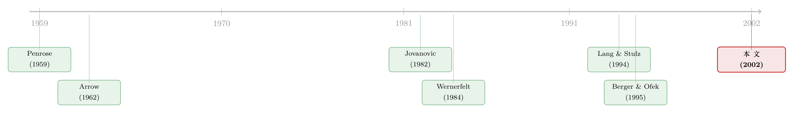

先专一，再试水，最后才多元——「多元化折价」的另一种解法
本文读的是 Bernardo & Chowdhry (2002, Journal of Financial Economics)：一家公司投资，赚到的不只是现金流，还有一份关于「自己到底有几斤几两」的信息。把这份信息当成实物期权来定价，作者得到一条公司的成长剧本——先专一、再试水、最后才多元；并由此给出了「多元化折价」一个全新的、不靠代理成本的解释：多元化的公司之所以看上去更便宜，可能只是因为它们更「老」，已经没什么可学的了。
1 一个被讲烂了、却始终没讲透的故事
先从一个老问题说起。
经验事实是清楚的：把业务摊在好几个分部里的多元化公司，市值往往低于几家专做对应单一业务的公司市值之和。这个差额，就是大名鼎鼎的「多元化折价」(diversification discount)——Lang and Stulz (1994) 用托宾 q、Berger and Ofek (1995) 用分部加总，都量到了它的存在。
接着，一个自然的问题是：折价从哪来？过去二十年的主流答案几乎都指向「公司内部出了毛病」——经理为了私利乱铺摊子、内部资本市场把钱配错了地方、分部之间互相补贴（关于内部资本市场和拆分如何验证这一点，可参见《拆开，是为了把「不一样」分开》）。一句话：多元化毁掉了价值。
然后，Bernardo 和 Chowdhry 在这篇论文里偏要换个角度问：会不会折价根本不是「多元化毁了价值」，而是「多元化的公司恰好是那批已经没什么可学的老公司」？
这就是全文要反复讲透的那一个核心：公司投资，从来不只是为了那点现金流，更是为了搞清楚自己究竟拥有什么样的资源。而「还有得学」这件事，本身就是一份有价值的期权。年轻公司贵，贵在它前方还摊着一地没拆开的礼物；老公司便宜，便宜在它该知道的都已经知道了。
2 把「资源」拆成两半
要把这个故事讲圆，第一步是给「资源」一个能算账的结构。
承接资源基础观 (resource-based view of the firm, Penrose 1959; Wernerfelt 1984) 的传统，作者把一家公司赖以获取竞争优势的技能、能力与资产统称为「资源」(resources)，并把它劈成两类：
- 一般资源 (general resources)，记作
G：能用在所有业务上，比如一套高效的分销系统； - 专用资源 (specific resources)，记作
S_i：只对某一项业务i有用，比如某条产品线上的 R&D 专长。
任何一个项目 i 的净现金流，取决于二者之和 R_i = G + S_i。关键的设定是：只有把项目真正做出来，才能观察到它的现金流。换句话说，公司无法靠空想了解自己，只能靠投资和踩坑去学（这正是 Jovanovic (1982) 的精神）。
公司还可以随时把某个项目放大 K_i > 1 倍，且这个放大是不可逆的——一旦摊开就收不回来。这一步至关重要：正因为放大不可逆，「等一等、看清楚再下注」才有了价值，整篇文章才有了实物期权 (real options) 的味道。作者用两个外生参数刻画两种扩张：把专业化业务放大 K_S，把多元化大业务建起来 K_G，并假设
$$K_G \ge 2 K_S.$$
直觉是：一般资源能在很多生意里复用，所以「做大多元化」的杠杆，天然比「死磕一条专业线」更猛。
故事的起点也设好了：公司相信自己在某个专业项目上握有一份有价值的专用资源，即 E_0[S] > E_0[S_i] = S̄，并为简化令 S̄ = 0。G 与 S 各自独立地取高低两值，H > 0 > L，且 Pr[S = H] = p、Pr[G = H] = q。所有人风险中性。
这里藏着全文最妙的一处张力。如果公司去做那个专业项目，它观察到的是 R_S = G + S——一个和。成功了，它分不清是「一般资源强」还是「专用资源强」。要把两者拆开，它得再去做一个与专用技能无关的项目。作者构造了一个巧妙的「一般项目」(general project)：同时摊开 N 个互不相关、且公司在其中都没有专用优势的小项目，每个规模 1/N，由大数定律，(1/N)Σ(G+S_i) → G + S̄ = G。于是做一般项目，等于把 G 单独「拍」了出来。
3 离散模型：一条「先专一」的成长剧本
有了这套积木，作者先在三期、二值的离散框架里求解（t = 0, 1, 2）。每一期公司只有三种动作：清盘退出、做专业/一般项目、或不可逆地放大（专业线或多元化业务）。
第一块结论是个看似平淡、实则关键的引理：
Lemma 1. 在
t = 0，公司不会同时去做一般项目和专业项目。
直觉是：同时做两件事，固然能更早学到 G，但这份「早知道」在当期决定「要不要做专业项目」时根本用不上——因为专业项目此刻已经在做了。既然单独做一般项目本身是非正 NPV 的，把它推迟一期、先只做专业项目，严格更优。
于是只剩两条路线值得比较：先专业后一般（"S then G"），还是先一般后专业（"G then S"）。第二块、也是核心的结论给了答案：
Proposition 1. 公司会在
t = 0最优地选择做专业项目。
证明的精髓值得一字一句地复述。假设公司反过来先做一般项目：它会学到 G 是高是低。若 G = H，下一期就建多元化大业务；若 G = L，它会不会再去用专业项目做实验？只要这个实验本身的价值为正，它就会做。 而这个实验的价值必然为正——否则「先做一般项目」这条路就退化成「只做了个非正 NPV 的一般项目」，得不偿失。这意味着：无论一般资源高低，用专业项目做实验的价值总是正的。 既然如此，「早知道 G」这份好处在当期用不上，而单做一般项目又是亏的，那干脆掉过头来——先专一。
把这条逻辑摊开，就是论文最漂亮的成果：一条公司生命周期的剧本。
- 公司先专一，做它自认有专用资源的那个项目；
- 若表现不算太差（
R_S = H + L），它会去试水一条自己未必擅长的一般业务； - 若一般业务成功（
R_G = H > 0），它大举多元化，建起多分部的大公司； - 若一般业务失败（
R_G = L < 0），则要么清盘（若早先专业线也差，R_S = H + L < 0），要么回头把专业线做得更大（若早先专业线还行，R_S = H + L > 0）。
这里冒出一个反直觉、却极有味道的预测：公司可能在一条不相关的业务上栽了跟头之后，反而加大对专业老本行的投入强度。 道理是：早先那个「还不错」的成绩 H + L，本来分不清是 G 高还是 S 高；如今一般项目摔了，公司恍然大悟——原来是专用资源强，一般资源不行。于是它收起多元化的念头，把那份被确认了的专用优势狠狠放大。
注意这一步对「NPV 法则」的微妙挑战：即便某个项目单看是负 NPV，只要它揭示的信息足够值钱，公司也该去投；反过来，即便预期现金流转正，公司也未必立刻做那个不可逆的大投资。投资的价值，被拆成了「现金流」和「信息」两份。（关于「按 NPV 选项目，为何反而选不出最高 NPV」这一更一般的悖论，可参见《为什么「按 NPV 选项目」反而选不出最高的 NPV？》。）
4 连续模型：把「学习」写成一个自由边界问题
离散模型讲清了「为什么先专一」，但要榨出更细的估值含义，作者把它推到连续时间、连续分布（Section 3）。这一节是全文的技术核心，值得一步步走。
降维。 一般情形下有五个状态变量（两个条件均值、两个条件方差、一个协方差），解不动。作者顺着上一节的结论作了一个聪明的简化假设：公司已经做了专业项目，因此完美地学到了总资源 G + S，但仍不知道 G 与 S 各占多少。这一刀把状态变量从五个砍到两个——G 的条件均值 Z 与条件方差 s^2。模型依然保留了那个核心张力：公司能看清「总分」，却看不清成功（失败）究竟该归功（归咎）于一般还是专用资源。
学习的动态。 公司继续做一般项目，其瞬时净现金流为
$$dY = (G + \bar{S})\,dt + \sigma_e\,dw,$$
其中 dw 是标准维纳过程，σ_e 衡量观测噪声。漂移项 G 未知、扩散项 σ_e 已知——这是一个连续时间的滤波 (filtering) 问题。由 Lipster and Shiryayev (1978) 的结果，条件均值与条件方差按下式演化：
$$dZ = \frac{D}{\sigma_e}\big[(G - Z)\,dt + \sigma_e\,dw\big], \qquad ds^2 = -D^2\,dt, \qquad D \equiv \frac{s^2}{\sigma_e}.$$
这两条方程把直觉量化得淋漓尽致。先看 dZ：虽然 E[dZ] = 0（因为 Z = E[G]、E[dw] = 0），但它的实际漂移是 (G − Z)——若 Z < G，随着现金流不断流入，估计 Z 会一路向真值 G 爬升，反之亦然。再看 s^2：条件方差以速率 D^2 确定性地衰减。极限上，σ_e → 0 时 D^2 → ∞，公司瞬间学会 G；σ_e → ∞ 时 D^2 = 0，公司什么都学不到。
由于 s^2 随时间确定性下降，D 也随之下降；而 Z 逼近真值 G 的速度正比于 D。于是有了两个干净的推论——
- 年轻公司学得快、长得快（这正是 Jovanovic (1982) 的观察）；
- 年轻公司的
Z波动更大，进而资产收益波动率更高。
估值。 公司在每一刻要在三件事里取最优：清盘、不可逆放大专业业务、或不可逆建多元化大业务。价值函数写成 V(Z, s^2)，满足如下贝尔曼方程——这就是全文最核心的一个方程：
在「继续实验」的区域 Z ∈ (Z_L, Z_H) 内，价值函数 V = E_t[(1/(1+r\,dt))(dY_t + V_t + dV_t)]。对它用伊藤引理，并利用 E[G] = Z 使 Z 的漂移项归零，得到
$$dV_t = \Big[\tfrac{1}{2}D^2 V_{ZZ}(Z, s^2) - D^2 V_{s^2}(Z, s^2)\Big]\,dt + D\,V_Z(Z, s^2)\,dw,$$
进而 V 必须满足的偏微分方程为
$$\tfrac{1}{2}D^2 V_{ZZ}(Z, s^2) - D^2 V_{s^2}(Z, s^2) - r V(Z, s^2) + Z = 0.$$
这是一个自由边界问题 (free boundary problem)：两个临界值 Z_L < Z_H 不是给定的，而要作为解的一部分被解出来。它们由接触条件 (contact conditions)
$$V(Z_L, s^2) = \max\left\{0,\, \frac{K_S(G+S)}{r}\right\}, \qquad V(Z_H, s^2) = \frac{K_G\,Z_H}{r},$$
和平滑粘合条件 (smooth-pasting conditions)
$$V_Z(Z_L, s^2) = 0, \qquad V_Z(Z_H, s^2) = \frac{K_G}{r}$$
共同钉死。Z 跌破 Z_L，公司或清盘、或回头放大专业线；Z 冲过 Z_H，公司建多元化大业务；夹在中间，就继续做实验。该 PDE 无解析解，作者用数值方法求解，并以 Schwartz and Moon (2001) 估计的典型初创公司现金流与估值矩做校准。
5 于是，反转出现：折价是「老」，不是「坏」
把上面这套机器开动起来，最让人眼前一亮的几个含义是：
第一，年轻公司更值钱。 在预期资源水平相同的前提下，年轻公司比年老公司更有价值——因为它对自己的资源还有更多可学，手里那份「继续实验」的实物期权更厚。
这正是对多元化折价的全新解释。多元化的公司，定义上是「在多个分部里运营」的公司；而 Mueller (1972)、Montgomery (1994) 的证据显示，多元化与公司年龄正相关，Matsusaka (1998) 也发现多数多元化公司十年前还是专业化的。把这条经验规律和模型一对接，逻辑就接通了：多元化的公司往往更老，已经学得差不多了，期权价值耗尽，于是市值低——折价并非源于多元化毁了价值，而是源于一种生命周期上的选择效应。这一条之所以漂亮，是因为它不需要搬出代理成本或内部资本市场失灵（关于「多元化在衰退里反而是一张信用保单」的另一条正面逻辑，可参见《把好天气存进坏天气》）。
第二，现金流跨期相关性越高，公司越值钱。 噪声 σ_e 越小，公司学 G 越快，未来决策越准，价值越高。而「现金流跨期相关性」恰是噪声大小的一个合理代理——相关性越高，意味着噪声越小。于是一个可检验的横截面预测呼之欲出：盈利/现金流跨期相关性更高的公司，市场估值更高。
第三，股价对消息的反应是不对称的，且依赖于公司的资源基础、未来投资机会与所处的生命周期阶段——同样一则正面或负面的盈利消息，砸在不同公司身上，激起的水花并不一样。
6 文献脉络：把三条河汇成一条
退一步看，这篇论文站在三条文献的交汇处。
一条是资源基础观：Penrose (1959) 最早把公司看作一束资源的集合，Wernerfelt (1984) 将其提炼为「资源基础观」，Montgomery and Wernerfelt (1988) 进一步区分了资源的专用程度。这条线告诉我们「公司靠什么赚租」，但基本是静态的。
第二条是边干边学：Arrow (1962) 是 learning-by-doing 的开山之作；而真正把「公司通过经营了解自身」写成动态模型的，是 Jovanovic (1982)——低成本公司在经营中逐渐认清自己的优势、并据此扩大生产，由此推出「小公司增长更快更波动、低效公司退出」等一系列结论。Bernardo-Chowdhry 与 Jovanovic 的分野在于：他们让公司用新项目去实验，以厘清资源能在多大程度上跨业务复用，并由此推出一整套关于估值、波动率与股价反应的新含义。
第三条是实物期权：Dixit and Pindyck (1994)、Trigeorgis (1996) 为不可逆投资下的「等待价值」奠定了语言。本文的贡献，正是把「学习」嵌进这套语言——把公司对自身资源的逐步认知，定价成一份会随年龄折旧的期权（这条「实物期权 + 信息」的脉络，也呼应了《谁的手指扣在扳机上？》中把信息与等待装进期权的思路）。
而它瞄准要解释的那个经验靶子，则来自多元化折价文献：Lang and Stulz (1994) 与 Berger and Ofek (1995)。

7 评论与延伸（Q&A + 研究方向）
(a) 几个可能的疑问
Q：这和 Jovanovic (1982) 到底差在哪？不都是「公司在经营中学习自己」吗？
差在「学什么」和「为什么实验」。Jovanovic 里公司学的是一个一维的「成本/效率」参数。本文把资源拆成一般与专用两块，公司做专业项目只能看到二者之和，必须主动去做一个不相关的「一般项目」才能把两者拆开——实验因此有了明确的信息目的，并直接生出「先专一、后多元」的生命周期与多元化折价的解释。
Q：「多元化折价是因为公司更老」这个解释，能被数据证伪吗？
能，而且很干净。它给出方向明确的预测：控制住公司年龄、生命周期阶段后，折价应当大幅收窄；而现有「代理成本」类解释不直接预测折价随年龄消退。本文只提供了 Mueller (1972)、Montgomery (1994)、Matsusaka (1998) 这些「多元化与年龄正相关」的间接证据，真正的检验留给了后人。
Q：「现金流跨期相关性越高、估值越高」这个预测，会不会和别的机制混淆？
风险高。跨期相关性也可能反映现金流的持续性、行业周期、甚至盈余管理，这些都能独立地影响估值。要把「学习速度」这一渠道干净地识别出来，需要额外的工具或场景，单看横截面相关性与估值的正相关并不足以证明因果。
Q：模型假设专业项目「无噪声地」揭示 G + S，是不是太强了？
是个为可解性付出的代价。作者坦承：若让专业业务的现金流也带噪声，模型会瞬间变得不可解（脚注 5 明说了）。降维后只剩
(Z, s^2)两个状态变量，故事讲得清，但也意味着「学习总资源」这一步被理想化了。
Q：「在不相关业务上失败后，反而加大老本行投入」——这真的反直觉吗？
表面反直觉，内里很顺。早先那个不上不下的成绩
H+L本是个混合信号；一般项目的失败把它「翻译」清楚了——原来强的是专用资源。于是公司理性地收缩多元化、重押专业线。它不是「输红了眼」，而是「终于看清了自己」。
Q：这是不是一篇纯理论、没有数据的论文？
基本是。除了用 Schwartz and Moon (2001) 的初创公司矩做数值校准，全文没有回归、没有系数。它的「量级」体现在结构假设上（
H > 0 > L、K_G ≥ 2K_S、决策树上pq、(1−p)(1−q)等概率），贡献在于一组可检验的预测，而非一份实证证据。
(b) 几个可能的研究问题与提案
1. 用公司债利差检验「年轻=期权厚」
【经济故事】若年轻公司价值更多来自「还没拆开的实物期权」，那么它的资产价值分布应更右偏、更不确定，对债权人意味着更高的资产波动与违约风险。多元化的老公司则相反。 【可行性】中。所需数据齐备（TRACE 公司债成交 + Compustat 分部数据 + 公司年龄），可在控制杠杆、规模后检验「分部数 / 年龄」对信用利差的影响；难点是把「期权价值」与「现金流波动」分离开，识别偏弱。
2. 把「现金流跨期相关性 → 估值」做成横截面检验
【经济故事】这是本文最干净、却几乎无人正面检验的预测：噪声小（相关性高）→ 学得快 → 期权更值钱 → 估值更高。 【可行性】高。构造公司层面盈利/现金流的跨期自相关，回到托宾 q 上即可。doable，但需小心持续性、行业周期等混淆项，最好辅以一个改变「学习速度」的外生冲击。
3. 外资进入如何改变「学习」的速度
【经济故事】若外资股东带来更好的监督与信息生产，能压低观测噪声
σ_e，按本模型应加快公司认清自身资源、缩短「试水期」、更早做出专一/多元的抉择。 【可行性】中。可借「可投资度」放开作为准自然实验，看外资准入后公司分部结构调整的速度是否加快（外资与信息生产的关系，亦可对照《外资真是「蝗虫」吗？》）。识别依赖放开的外生性。
4. 「失败后加码老本行」的事件研究
【经济故事】本文最锐利的微观预测：在不相关新业务上失利后，公司反而提高专业线投资强度。 【可行性】中高。识别「不相关业务失败」事件（如新分部关闭、跨行业并购减记），用事件研究看核心业务资本开支的变化。难点是事件的内生性与「不相关」的界定。
8 我的判断
这篇论文的贡献，不在于解了一个多难的方程，而在于换了一个看世界的角度：它把「投资揭示信息」这件常被一笔带过的事，认真地定价成一份会随公司年龄折旧的实物期权，并由此一口气长出生命周期剧本、年轻溢价、相关性溢价、不对称股价反应，外加一个不靠「公司变坏」就能成立的多元化折价解释。在一片把折价归因于代理问题的文献里，这个「折价即衰老」的视角既新鲜，又可证伪，二十多年后读来仍有锋芒。
对识别的担忧也很实在。其一，模型为了可解，把「做专业项目即无噪声地学到总资源」理想化了，现实中公司对自身的认知远没这么干脆。其二，几个最诱人的实证预测——尤其是「相关性 → 估值」和「折价随年龄消退」——都面临严重的混淆项，单凭横截面相关很难坐实因果。其三，全文是部分均衡，没有竞争对手的反应；而我们知道，一旦把竞争装进实物期权，「等待」的价值会被同行的抢跑大幅改写（参见《竞争越激烈，反而越要「等」？》）。
我最想看到的后续，是有人拿着今天的分部数据和公司年龄，老老实实地把「折价随年龄消退」这条预测跑一遍——如果折价在控制年龄与生命周期阶段后真的塌掉一大半，那这篇 2002 年的理论文章，就该被请回多元化折价争论的正中央。
参考文献
Arrow, K. J. (1962). The economic implications of learning-by-doing. Review of Economic Studies 29, 155–173.
Berger, P., & Ofek, E. (1995). Diversification's effect on firm value. Journal of Financial Economics 37, 39–65.
Bernardo, A. E., & Chowdhry, B. (2002). Resources, real options, and corporate strategy. Journal of Financial Economics 63, 211–234.
Dixit, A., & Pindyck, R. (1994). Investment under Uncertainty. Princeton University Press, Princeton.
Easley, D., & Kiefer, N. M. (1988). Controlling a stochastic process with unknown parameters. Econometrica 56, 1045–1064.
Jovanovic, B. (1982). Selection and the evolution of industry. Econometrica 50, 649–670.
Lang, L., & Stulz, R. (1994). Tobin's q, corporate diversification, and firm performance. Journal of Political Economy 102, 1248–1280.
Lipster, R. S., & Shiryayev, A. N. (1978). Statistics of Random Processes. Springer, New York.
Matsusaka, J. G. (1998). Corporate diversification, value maximization, and organizational capabilities. Working paper, University of Southern California.
Montgomery, C. A. (1994). Corporate diversification. Journal of Economic Perspectives 8, 163–178.
Montgomery, C. A., & Wernerfelt, B. (1988). Diversification, Ricardian rents, and Tobin's q. RAND Journal of Economics 19, 623–632.
Mitchell, M. F. (2000). The scope and organization of production: firm dynamics over the learning curve. RAND Journal of Economics 31, 180–205.
Mueller, D. C. (1972). A life cycle theory of the firm. Journal of Industrial Economics 20, 199–219.
Penrose, E. T. (1959). The Theory of the Growth of the Firm. Basil Blackwell, Oxford.
Schwartz, E., & Moon, M. (2001). Rational pricing of internet companies revisited. Working paper, University of California.
Trigeorgis, L. (1996). Real Options—Managerial Flexibility and Strategy in Resource Allocation. MIT Press, Cambridge.
Wernerfelt, B. (1984). A resource-based view of the firm. Strategic Management Journal 5, 171–180.